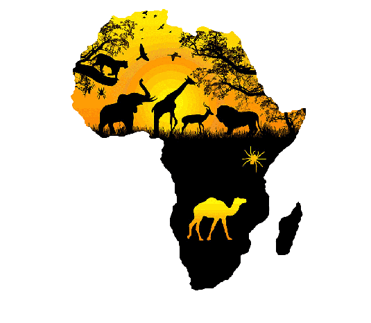

Africa the Continent
Africa is the second largest continent in the world, after Asia. It is land of great contrasts, with hot deserts, thick forests and grassy plains. Most places are either hot and wet or hot and dry. The worlds longest river Nile flows through North Africa to the east of the biggest desert named Sahara.

AMAZING SIGHTS: Africa is a land of spectacular sights, including the Great Rift Valley and the towering Mount Kilimanjaro, shown here, which is the remains of an extinct volcano.
VICTORIA FALLS : The Victoria Falls are situated on the border between Zambia and Zimbabwe. Local people call them the 'smoke that thunders' because they make deafening noise and produce a smokelike spray of mist.


HUNTERS AND HUNTED: Animals such as giraffes and antelopes roam across the African grasslands, followed by hunters such as lions. They share watering holes.
African Kingdom: Since around BC, many kingdoms and empires have been powerful in Africa. The first was in Egypt, where the pharoahs built great pyramid tombs. Later African kingdoms, all south of the Saharah desert, became rich through trade and conquest; their peoples lived by farming, hunting, trading and making fine craft goods.


Circle of stone: From the 1000s onwards the Shona people of southern Africa mined gold and made bark cloth. They built a royal palace at Great Zimbabwe between AD 1000-1500.Its huge stone walls still stand today.
Fighting Force: Few warriors could stand up to the armies of the Zulu people. They conquered large areas of South Africa in the 1820s.Their fighters carried spears, shields and wooden clubs.


Mosque At Mali: In the 1300s,the West African empire of Mali was famous for its fabulous riches. Its merchants crossed the Sahara desert by camel, travelling to north Africa.These merchants were part of an international Muslim community and worshipped in religious buildings called mosques.
Statue of Hero: Legends from central Africa tell of Chibinda llunga, who lived in the 1500s. He was a prince of the Luba people but fell in love with Lweji a Lunda princess. He came to rule over her nation and was wise and just.